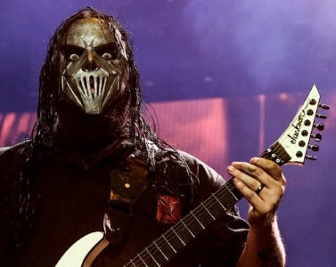

Queen are a British rock band formed in London in 1970. Their classic line-up was Freddie Mercury (lead vocals, piano), Brian May (guitar, vocals), Roger Taylor (drums, vocals) and John Deacon (bass). Their earliest works were influenced progressive rock, hard rock and heavy metal, but the band gradually ventured into more conventional and radio-friendly works by incorporating further styles, such as arena rock and pop rock.
Slipknot

Slipknot is an American heavy metal band formed in Des Moines, Iowa in 1995 by percussionist Shawn Crahan, drummer Joey Jordison and bassist Paul Gray. After several lineup changes in its early years, the band settled on nine members for more than a decade: Crahan, Jordison, Gray, Craig Jones, Mick Thomson, Corey Taylor, Sid Wilson, Chris Fehn, and Jim Root. Gray died on May 24, 2010, and was replaced during 2011–2014 by guitarist Donnie Steele. Jordison was dismissed from the band on December 12, 2013. Steele left during the recording sessions for .5: The Gray Chapter. The band found replacements in Alessandro Venturella on bass and Jay Weinberg on drums. After the departure of Jordison, as of December 2013 the only founding member in the current lineup is percussionist Crahan. Fehn was also dismissed from the band in March 2019 prior to the writing of We Are Not Your Kind.
Best Moshpit Ever
If you are quiet on the bench you will just get swallowed up. It is like a mosh pit.